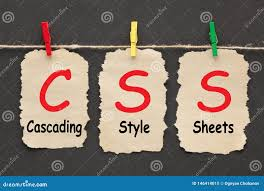
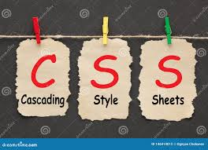

CSS tarixi CSS birinchi marta 1997 yilda veb-ishlab chiquvchilar uchun yaratilgan veb-sahifalarning Ko’rinishini aniqlash uchun ishlab chiqilgan. Veb-professionallar veb-sayt kodining mazmuni va tarkibini vizual dizayndan ajratishga imkon berish uchun mo’ljallangan edi.Strukturani va uslubni ajratish HTML-ga asosan, «paydo bo’lishi va his qilish» deb nomlanadigan narsaning dizayni va tartibini tashvishga solmasdan, aslida asosli bo’lgan funktsiyadan ko’proq narsani bajarishga imkon beradi.Veb-brauzerlar ushbu tilning asosiy shrift va rang tomonlaridan ko’proq foydalana boshlagach, CSS 2000 atrofida mashhurlikka erisha olmadi. Bugungi kunda barcha zamonaviy brauzerlar CSS-ning 1-bosqichi, CSS-ning 2-darajali qismi va hatto CSS-ning 3-darajali aspektlarini qo’llab-quvvatlaydi. CSS-ning rivojlanishi va yangi uslublar joriy etilishi davom etar ekan, veb-brauzerlar ushbu brauzerlarda yangi CSS-ni qo’llab-quvvatlaydigan va veb-dizaynerlar bilan ishlash uchun kuchli yangi uslublar vositalarini beradigan modullarni joriy qila boshladilar.Ko’p yillar davomida veb-saytlarni loyihalash va ishlab chiqish uchun CSS-dan foydalanishni rad etgan tanlovli veb-dizaynerlar mavjud edi, ammo bu amaliyot bugungi kunda sanoatdan chiqib ketdi. CSS hozir veb-dizayni uchun keng tarqalgan ishlatiladigan standart bo’lib, siz bugungi kunda ushbu tilda hech qanday asosiy tushunchaga ega bo’lmagan sohada ishlaydigan har bir kishini topishingiz qiyinlashadi.

 
